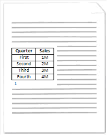

caption (Single Caption Type Definition)
This element specifies the contents and positioning for captions which may be used to automatically label objects in a WordprocessingML document. A caption is a string that labels an object included in a WordprocessingML document, and typically consists of a string plus a field which numbers this item within a collection of similar objects.
[Example: Consider the diagram below illustrating a WordprocessingML document containing a table that has been labeled with a caption:

In this diagram, the table contained in the WordprocessingML document has been labeled by inserting a caption below the table consisting of the string Table followed by a field whose result is a decimal number. The settings which automatically produced this form of caption are specified using the following WordprocessingML fragment:
<w:captions>
<w:caption w:name="Table" w:pos="below" w:numFmt="decimal" />
</w:captions>
The caption element specifies the parameters for the resulting caption to be used to automatically label content within the WordprocessingML document. Specifically, the name and numFmt attributes specify that captions of this type inserted in the given WordprocessingML document shall consist of the string Table followed by an incrementing decimal number field. In addition, the pos attribute specifies that these captions shall be placed below the object they are used to label.
WordprocessingML is designed such that the caption element may be used in conjunction with applications to provide a dynamic captioning experience. In other words, an application may use the WordprocessingML in the example above to automatically insert a caption consisting of the string Table followed by an incrementing decimal number field below tables when tables are inserted into a WordprocessingML document as defined by the autoCaption element (§2.15.1.7). end example]
|
Parent Elements |
|
captions (§2.15.1.17) |
|
Attributes |
Description | ||||||||||||||||||||||||
|
chapNum (Include Chapter Number in Field for Caption) |
Specifies whether or not to display numbering associated with the most recent chapter heading in the WordprocessingML document within the caption field. A chapter heading is a paragraph of text within a WordprocessingML document that is formatted with a style that has been specified by the heading attribute to demarcate chapters in documents.
Only a style with its styleID attribute equal to Heading1, Heading2, Heading3, Heading4, Heading5, Heading6, Heading7, Heading8, or Heading9 may be specified as the style used to demarcate chapters in a document. The choice of which of these heading levels shall be used to determine the current chapter number is defined by the value of the corresponding heading attribute. [Example: Heading1 is used as the chapter heading when chapNum is true and heading is 1. end example]
If this attribute is omitted, then chapter numbers shall not be included in the resulting caption.
[Example: Consider the diagram below:
This diagram depicts a WordprocessingML document containing two chapters, each containing two tables labeled with captions. The Heading 2 style has been associated with chapter headings and applied to the strings: Chapter 1 - FY02 and Chapter 2 - FY03 in this document.
Specifically, the style used to demarcate chapters, is the style with a styleID attribute equal to Heading2 as specified by the heading attribute value of 2 in the WordprocessingML for this caption, defined as follows:
<w:caption w:name="Table" w:pos="below" w:chapNum="true" w:heading="2" w:numFmt="upperCase" w:sep="8212" />
The chapNum attribute has a value of true, specifying that the captions used to label the tables within this document will contain a symbol corresponding to the one-based index of the chapter in which it is contained.
This can be seen in that the captions in Chapter 1 contain a 1, while the captions in Chapter 2 contain a 2, each corresponding with their respective chapter number. end example]
The possible values for this attribute are defined by the ST_OnOff simple type (§2.18.67). | ||||||||||||||||||||||||
|
heading (Style for Chapter Headings) |
Specifies the given style that is used to demarcate chapter headings in a document.
This value is used to link the chapter headings with paragraphs with a styleID attribute as follows:
If this attribute is omitted, then its value shall be assumed to be 1.
[Example: Consider the diagram below:
This diagram depicts a WordprocessingML document containing two chapters, each containing two tables labeled with captions. The Heading 2 style has been associated with chapter headings and applied to the strings: Chapter 1 - FY02 and Chapter 2 - FY03 in this document.
Specifically, the style used to demarcate chapter headings is the style with its styleID attribute equal to Heading" as specified by the heading attribute value of 2 in the WordprocessingML below.
<w:caption w:name="Table" w:pos="below" w:chapNum="On" w:heading="2" w:numFmt="upperCase" w:sep="8212" />
In other words, the WordprocessingML above may be used to label tables inserted in a given WordprocessingML document generated by an application with a caption consisting of: the string Table followed by a decimal number corresponding with the chapter number in which the table is present, a dash as defined in the sep attribute, and a capital English letter defined by the numFmt attribute corresponding with the given table's ordering within the current chapter. end example]
The possible values for this attribute are defined by the ST_DecimalNumber simple type (§2.18.16). | ||||||||||||||||||||||||
|
name (Caption Type Name) |
Specifies the literal string component of this caption.
This value is used as follows: • It is added to the field containing the chapter number and item number of this object when a caption is automatically added to the document. • It is used to uniquely label this caption type, allowing it to be linked with classes of objects via the autoCaption element (§2.15.1.7) • It may be used to label this caption type in a user interface.
[Example: Consider the diagram below illustrating a WordprocessingML document containing a table that has been labeled with a caption:
In this diagram, the table contained in the WordprocessingML document has been labeled by inserting a caption below the table consisting of the string Table followed by a decimal number. This caption format is specified with the following WordprocessingML:
<w:caption w:name="Table" w:pos="below" w:numFmt="decimal" />
Specifically, the name attribute specifies that the first part of the string that comprises the give caption shall consist of the string Table. end example]
The possible values for this attribute are defined by the ST_String simple type (§2.18.89). | ||||||||||||||||||||||||
|
noLabel (Do Not Include Name In Caption) |
Specifies if the string specified in the name attribute shall be included in the resulting caption when it is automatically added to the document. If set to true, then the label text in the name attribute is omitted when adding the caption.
If this attribute is omitted, then the name shall be added to the caption.
[Example: Consider the diagram below illustrating a WordprocessingML document containing a table that has been labeled with a caption:

In this diagram, the table contained in the WordprocessingML document has been labeled by inserting a caption below the table consisting of only a decimal number.
This caption format is specified using the following WordprocessingML:
<w:caption w:name="Custom" w:pos="below" w:noLabel="true" w:numFmt="decimal" />
Here, the noLabel attribute is equal to true specifying that when this caption format is automatically added, it shall not include the label. end example]
The possible values for this attribute are defined by the ST_OnOff simple type (§2.18.67). | ||||||||||||||||||||||||
|
Specifies the format of the numbering which shall be included in an automatically generated caption to specify the index of this item in that collection (within the current chapter if chapNum is specified, or within the current document story).
If this attribute is omitted, then its default value shall be assumed to be decimal.
[Example: Consider the diagram below illustrating a WordprocessingML document containing a table that has been labeled with a caption:
In this example, the table contained in the WordprocessingML document has been labeled by inserting a caption below the table consisting of only a decimal number.
This caption format is specified using the following WordprocessingML:
<w:caption w:name="Custom" w:pos="below" w:noLabel="true" w:numFmt="decimal" />
Here, the numFmt attribute is equal to decimal, specifying that a decimal number shall be included in the table caption when it is automatically inserted. End Example]
The possible values for this attribute are defined by the ST_NumberFormat simple type (§2.18.66). | |||||||||||||||||||||||||
|
pos (Automatic Caption Placement) |
Specifies how an automatically inserted caption shall be positioned relative to the object that it is captioning.
If this attribute is omitted, then the default value shall be below.
[Example: Consider the diagram below illustrating a WordprocessingML document containing a table that has been labeled with a caption.
In this diagram, the table contained in the WordprocessingML document has been labeled by inserting a caption below the table consisting of the string Table followed by a decimal number.
This caption format is specified using the following WordprocessingML:
<w:caption w:name="Table" w:pos="below" w:numFmt="decimal" />
The pos attribute specifies that the given caption shall be placed below the object it is labelling. end example]
The possible values for this attribute are defined by the ST_CaptionPos simple type (§2.18.8). | ||||||||||||||||||||||||
|
sep (Chapter Number/Item Index Separator) |
Specifies the character which shall be used to separate the chapter number used in this caption from the caption item numbering. A caption format consists of three components: • The (optional) literal string • The (optional) chapter number • The index of this caption within the chapter/document
When the latter two items are both present, they are delimited using the chapter separator specified by this attribute.
If this attribute is omitted, then its default value shall be hyphen. If the chapter number is not part of the caption format, then this parameter shall be ignored.
[Example: Consider the diagram below:
This diagram depicts a WordprocessingML document containing two chapters, each containing two tables labeled with captions. The Heading 2 style has been associated with chapter headings and applied to the strings: Chapter 1 - FY02 and Chapter 2 - FY03 in this document.
Specifically, the style used to demarcate chapter headings is the style with a styleID attribute equal to Heading2 as specified by the heading attribute value of 2 in the WordprocessingML below.
<w:caption w:name="Table" w:pos="below" w:chapNum="On" w:heading="2" w:numFmt="upperCase" w:sep="hyphen" />
The sep attribute value of hyphen specifies that the chapter number and caption index shall be separated by a hyphen character when displayed in the document. end example]
The possible values for this attribute are defined by the ST_ChapterSep simple type (§2.18.9). |


The following XML Schema fragment defines the contents of this element:
<complexType name="CT_Caption">
<attribute name="name" type="ST_String" use="required"/>
<attribute name="pos" type="ST_CaptionPos" use="optional"/>
<attribute name="chapNum" type="ST_OnOff" use="optional"/>
<attribute name="heading" type="ST_DecimalNumber" use="optional"/>
<attribute name="noLabel" type="ST_OnOff" use="optional"/>
<attribute name="numFmt" type="ST_NumberFormat" use="optional"/>
<attribute name="sep" type="ST_ChapterSep" use="optional"/>
</complexType>